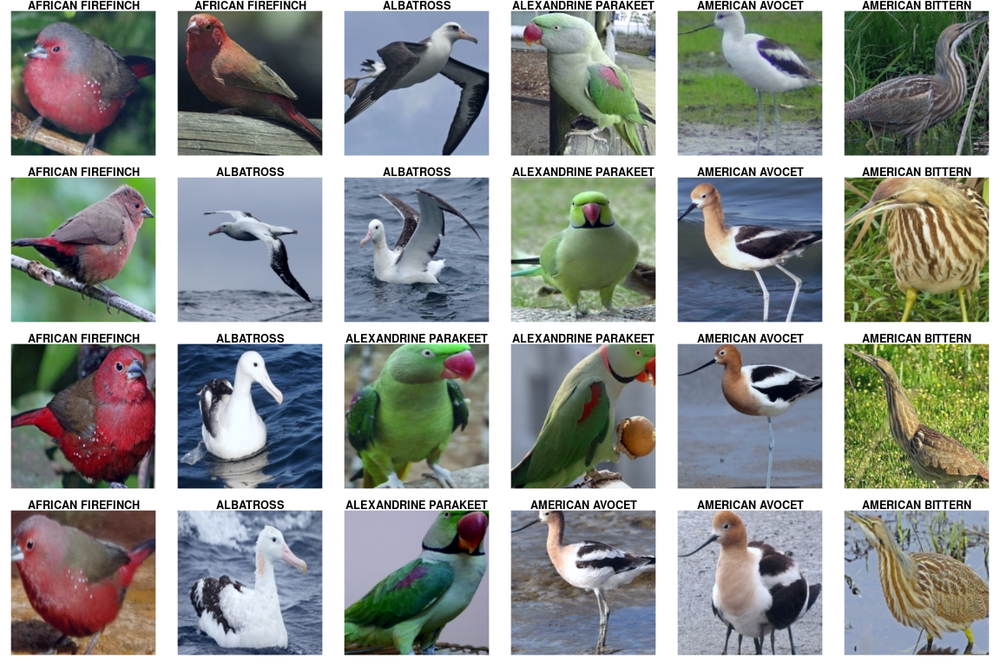

In recent posts, we’ve been exploring essential torch functionality: tensors, the sine qua non of every deep learning framework; autograd, torch’s implementation of reverse-mode automatic differentiation; modules, composable building blocks of neural networks; and optimizers, the – well – optimization algorithms that torch provides.
But we haven’t really had our “hello world” moment yet, at least not if by “hello world” you mean the inevitable deep learning experience of classifying pets. Cat or dog? Beagle or boxer? Chinook or Chihuahua? We’ll distinguish ourselves by asking a (slightly) different question: What kind of bird?
Topics we’ll address on our way:
The core roles of
torchdatasets and data loaders, respectively.How to apply
transforms, both for image preprocessing and data augmentation.How to use Resnet (He et al. 2015), a pre-trained model that comes with
torchvision, for transfer learning.How to use learning rate schedulers, and in particular, the one-cycle learning rate algorithm [@abs-1708-07120].
How to find a good initial learning rate.
For convenience, the code is available on Google Colaboratory – no copy-pasting required.
Data loading and preprocessing
The example dataset used here is available on Kaggle.
Conveniently, it may be obtained using torchdatasets, which uses pins for authentication, retrieval and storage. To enable pins to manage your Kaggle downloads, please follow the instructions here.
This dataset is very “clean”, unlike the images we may be used to from, e.g., ImageNet. To help with generalization, we introduce noise during training – in other words, we perform data augmentation. In torchvision, data augmentation is part of an image processing pipeline that first converts an image to a tensor, and then applies any transformations such as resizing, cropping, normalization, or various forms of distorsion.
Below are the transformations performed on the training set. Note how most of them are for data augmentation, while normalization is done to comply with what’s expected by ResNet.
Image preprocessing pipeline
library(torch)
library(torchvision)
library(torchdatasets)
library(dplyr)
library(pins)
library(ggplot2)
device <- if (cuda_is_available()) torch_device("cuda:0") else "cpu"
train_transforms <- function(img) {
img %>%
# first convert image to tensor
transform_to_tensor() %>%
# then move to the GPU (if available)
(function(x) x$to(device = device)) %>%
# data augmentation
transform_random_resized_crop(size = c(224, 224)) %>%
# data augmentation
transform_color_jitter() %>%
# data augmentation
transform_random_horizontal_flip() %>%
# normalize according to what is expected by resnet
transform_normalize(mean = c(0.485, 0.456, 0.406), std = c(0.229, 0.224, 0.225))
}
On the validation set, we don’t want to introduce noise, but still need to resize, crop, and normalize the images. The test set should be treated identically.
And now, let’s get the data, nicely divided into training, validation and test sets. Additionally, we tell the corresponding R objects what transformations they’re expected to apply:1
train_ds <- bird_species_dataset("data", download = TRUE, transform = train_transforms)
valid_ds <- bird_species_dataset("data", split = "valid", transform = valid_transforms)
test_ds <- bird_species_dataset("data", split = "test", transform = test_transforms)
Two things to note. First, transformations are part of the dataset concept, as opposed to the data loader we’ll encounter shortly. Second, let’s take a look at how the images have been stored on disk. The overall directory structure (starting from data, which we specified as the root directory to be used) is this:
data/bird_species/train
data/bird_species/valid
data/bird_species/testIn the train, valid, and test directories, different classes of images reside in their own folders. For example, here is the directory layout for the first three classes in the test set:
data/bird_species/test/ALBATROSS/
- data/bird_species/test/ALBATROSS/1.jpg
- data/bird_species/test/ALBATROSS/2.jpg
- data/bird_species/test/ALBATROSS/3.jpg
- data/bird_species/test/ALBATROSS/4.jpg
- data/bird_species/test/ALBATROSS/5.jpg
data/test/'ALEXANDRINE PARAKEET'/
- data/bird_species/test/'ALEXANDRINE PARAKEET'/1.jpg
- data/bird_species/test/'ALEXANDRINE PARAKEET'/2.jpg
- data/bird_species/test/'ALEXANDRINE PARAKEET'/3.jpg
- data/bird_species/test/'ALEXANDRINE PARAKEET'/4.jpg
- data/bird_species/test/'ALEXANDRINE PARAKEET'/5.jpg
data/test/'AMERICAN BITTERN'/
- data/bird_species/test/'AMERICAN BITTERN'/1.jpg
- data/bird_species/test/'AMERICAN BITTERN'/2.jpg
- data/bird_species/test/'AMERICAN BITTERN'/3.jpg
- data/bird_species/test/'AMERICAN BITTERN'/4.jpg
- data/bird_species/test/'AMERICAN BITTERN'/5.jpgThis is exactly the kind of layout expected by torchs image_folder_dataset() – and really bird_species_dataset() instantiates a subtype of this class. Had we downloaded the data manually, respecting the required directory structure, we could have created the datasets like so:
# e.g.
train_ds <- image_folder_dataset(
file.path(data_dir, "train"),
transform = train_transforms)
Now that we got the data, let’s see how many items there are in each set.
train_ds$.length()
valid_ds$.length()
test_ds$.length()
31316
1125
1125That training set is really big! It’s thus recommended to run this on GPU, or just play around with the provided Colab notebook.
With so many samples, we’re curious how many classes there are.
class_names <- test_ds$classes
length(class_names)
225So we do have a substantial training set, but the task is formidable as well: We’re going to tell apart no less than 225 different bird species.
Data loaders
While datasets know what to do with each single item, data loaders know how to treat them collectively. How many samples make up a batch? Do we want to feed them in the same order always, or instead, have a different order chosen for every epoch?
batch_size <- 64
train_dl <- dataloader(train_ds, batch_size = batch_size, shuffle = TRUE)
valid_dl <- dataloader(valid_ds, batch_size = batch_size)
test_dl <- dataloader(test_ds, batch_size = batch_size)
Data loaders, too, may be queried for their length. Now length means: How many batches?
train_dl$.length()
valid_dl$.length()
test_dl$.length()
490
18
18Some birds
Next, let’s view a few images from the test set. We can retrieve the first batch – images and corresponding classes – by creating an iterator from the dataloader and calling next() on it:
# for display purposes, here we are actually using a batch_size of 24
batch <- train_dl$.iter()$.next()
batch is a list, the first item being the image tensors:
batch[[1]]$size()
[1] 24 3 224 224And the second, the classes:
batch[[2]]$size()
[1] 24Classes are coded as integers, to be used as indices in a vector of class names. We’ll use those for labeling the images.
classes <- batch[[2]]
classes
torch_tensor
1
1
1
1
1
2
2
2
2
2
3
3
3
3
3
4
4
4
4
4
5
5
5
5
[ GPULongType{24} ]The image tensors have shape batch_size x num_channels x height x width. For plotting using as.raster(), we need to reshape the images such that channels come last. We also undo the normalization applied by the dataloader.
Here are the first twenty-four images:
library(dplyr)
images <- as_array(batch[[1]]) %>% aperm(perm = c(1, 3, 4, 2))
mean <- c(0.485, 0.456, 0.406)
std <- c(0.229, 0.224, 0.225)
images <- std * images + mean
images <- images * 255
images[images > 255] <- 255
images[images < 0] <- 0
par(mfcol = c(4,6), mar = rep(1, 4))
images %>%
purrr::array_tree(1) %>%
purrr::set_names(class_names[as_array(classes)]) %>%
purrr::map(as.raster, max = 255) %>%
purrr::iwalk(~{plot(.x); title(.y)})

Model
The backbone of our model is a pre-trained instance of ResNet.
model <- model_resnet18(pretrained = TRUE)
But we want to distinguish among our 225 bird species, while ResNet was trained on 1000 different classes. What can we do? We simply replace the output layer.
The new output layer is also the only one whose weights we are going to train – leaving all other ResNet parameters the way they are. Technically, we could perform backpropagation through the complete model, striving to fine-tune ResNet’s weights as well. However, this would slow down training significantly. In fact, the choice is not all-or-none: It is up to us how many of the original parameters to keep fixed, and how many to “set free” for fine tuning. For the task at hand, we’ll be content to just train the newly added output layer: With the abundance of animals, including birds, in ImageNet, we expect the trained ResNet to know a lot about them!
model$parameters %>% purrr::walk(function(param) param$requires_grad_(FALSE))
To replace the output layer, the model is modified in-place:
num_features <- model$fc$in_features
model$fc <- nn_linear(in_features = num_features, out_features = length(class_names))
Now put the modified model on the GPU (if available):
model <- model$to(device = device)
Training
For optimization, we use cross entropy loss and stochastic gradient descent.
criterion <- nn_cross_entropy_loss()
optimizer <- optim_sgd(model$parameters, lr = 0.1, momentum = 0.9)
Finding an optimally efficient learning rate
We set the learning rate to 0.1, but that is just a formality. As has become widely known due to the excellent lectures by fast.ai, it makes sense to spend some time upfront to determine an efficient learning rate. While out-of-the-box, torch does not provide a tool like fast.ai’s learning rate finder, the logic is straightforward to implement. Here’s how to find a good learning rate, as translated to R from Sylvain Gugger’s post:
# ported from: https://sgugger.github.io/how-do-you-find-a-good-learning-rate.html
losses <- c()
log_lrs <- c()
find_lr <- function(init_value = 1e-8, final_value = 10, beta = 0.98) {
num <- train_dl$.length()
mult = (final_value/init_value)^(1/num)
lr <- init_value
optimizer$param_groups[[1]]$lr <- lr
avg_loss <- 0
best_loss <- 0
batch_num <- 0
for (b in enumerate(train_dl)) {
batch_num <- batch_num + 1
optimizer$zero_grad()
output <- model(b[[1]]$to(device = device))
loss <- criterion(output, b[[2]]$to(device = device))
#Compute the smoothed loss
avg_loss <- beta * avg_loss + (1-beta) * loss$item()
smoothed_loss <- avg_loss / (1 - beta^batch_num)
#Stop if the loss is exploding
if (batch_num > 1 && smoothed_loss > 4 * best_loss) break
#Record the best loss
if (smoothed_loss < best_loss || batch_num == 1) best_loss <- smoothed_loss
#Store the values
losses <<- c(losses, smoothed_loss)
log_lrs <<- c(log_lrs, (log(lr, 10)))
loss$backward()
optimizer$step()
#Update the lr for the next step
lr <- lr * mult
optimizer$param_groups[[1]]$lr <- lr
}
}
find_lr()
df <- data.frame(log_lrs = log_lrs, losses = losses)
ggplot(df, aes(log_lrs, losses)) + geom_point(size = 1) + theme_classic()

The best learning rate is not the exact one where loss is at a minimum. Instead, it should be picked somewhat earlier on the curve, while loss is still decreasing. 0.05 looks like a sensible choice.
This value is nothing but an anchor, however. Learning rate schedulers allow learning rates to evolve according to some proven algorithm. Among others, torch implements one-cycle learning [@abs-1708-07120], cyclical learning rates (Smith 2015), and cosine annealing with warm restarts (Loshchilov and Hutter 2016).
Here, we use lr_one_cycle(), passing in our newly found, optimally efficient, hopefully, value 0.05 as a maximum learning rate. lr_one_cycle() will start with a low rate, then gradually ramp up until it reaches the allowed maximum. After that, the learning rate will slowly, continuously decrease, until it falls slightly below its initial value.
All this happens not per epoch, but exactly once, which is why the name has one_cycle in it. Here’s how the evolution of learning rates looks in our example:

Before we start training, let’s quickly re-initialize the model, so as to start from a clean slate:
model <- model_resnet18(pretrained = TRUE)
model$parameters %>% purrr::walk(function(param) param$requires_grad_(FALSE))
num_features <- model$fc$in_features
model$fc <- nn_linear(in_features = num_features, out_features = length(class_names))
model <- model$to(device = device)
criterion <- nn_cross_entropy_loss()
optimizer <- optim_sgd(model$parameters, lr = 0.05, momentum = 0.9)
And instantiate the scheduler:
num_epochs = 10
scheduler <- optimizer %>%
lr_one_cycle(max_lr = 0.05, epochs = num_epochs, steps_per_epoch = train_dl$.length())
Training loop
Now we train for ten epochs. For every training batch, we call scheduler$step() to adjust the learning rate. Notably, this has to be done after optimizer$step().
train_batch <- function(b) {
optimizer$zero_grad()
output <- model(b[[1]])
loss <- criterion(output, b[[2]]$to(device = device))
loss$backward()
optimizer$step()
scheduler$step()
loss$item()
}
valid_batch <- function(b) {
output <- model(b[[1]])
loss <- criterion(output, b[[2]]$to(device = device))
loss$item()
}
for (epoch in 1:num_epochs) {
model$train()
train_losses <- c()
for (b in enumerate(train_dl)) {
loss <- train_batch(b)
train_losses <- c(train_losses, loss)
}
model$eval()
valid_losses <- c()
for (b in enumerate(valid_dl)) {
loss <- valid_batch(b)
valid_losses <- c(valid_losses, loss)
}
cat(sprintf("\nLoss at epoch %d: training: %3f, validation: %3f\n", epoch, mean(train_losses), mean(valid_losses)))
}
Loss at epoch 1: training: 2.662901, validation: 0.790769
Loss at epoch 2: training: 1.543315, validation: 1.014409
Loss at epoch 3: training: 1.376392, validation: 0.565186
Loss at epoch 4: training: 1.127091, validation: 0.575583
Loss at epoch 5: training: 0.916446, validation: 0.281600
Loss at epoch 6: training: 0.775241, validation: 0.215212
Loss at epoch 7: training: 0.639521, validation: 0.151283
Loss at epoch 8: training: 0.538825, validation: 0.106301
Loss at epoch 9: training: 0.407440, validation: 0.083270
Loss at epoch 10: training: 0.354659, validation: 0.080389It looks like the model made good progress, but we don’t yet know anything about classification accuracy in absolute terms. We’ll check that out on the test set.
Test set accuracy
Finally, we calculate accuracy on the test set:
model$eval()
test_batch <- function(b) {
output <- model(b[[1]])
labels <- b[[2]]$to(device = device)
loss <- criterion(output, labels)
test_losses <<- c(test_losses, loss$item())
# torch_max returns a list, with position 1 containing the values
# and position 2 containing the respective indices
predicted <- torch_max(output$data(), dim = 2)[[2]]
total <<- total + labels$size(1)
# add number of correct classifications in this batch to the aggregate
correct <<- correct + (predicted == labels)$sum()$item()
}
test_losses <- c()
total <- 0
correct <- 0
for (b in enumerate(test_dl)) {
test_batch(b)
}
mean(test_losses)
[1] 0.03719test_accuracy <- correct/total
test_accuracy
[1] 0.98756An impressive result, given how many different species there are!
Wrapup
Hopefully, this has been a useful introduction to classifying images with torch, as well as to its non-domain-specific architectural elements, like datasets, data loaders, and learning-rate schedulers. Future posts will explore other domains, as well as move on beyond “hello world” in image recognition. Thanks for reading!
He, Kaiming, Xiangyu Zhang, Shaoqing Ren, and Jian Sun. 2015. “Deep Residual Learning for Image Recognition.” CoRR abs/1512.03385. http://arxiv.org/abs/1512.03385.
Loshchilov, Ilya, and Frank Hutter. 2016. “SGDR: Stochastic Gradient Descent with Restarts.” CoRR abs/1608.03983. http://arxiv.org/abs/1608.03983.
Smith, Leslie N. 2015. “No More Pesky Learning Rate Guessing Games.” CoRR abs/1506.01186. http://arxiv.org/abs/1506.01186.
Physically, the dataset consists of a single
zipfile; so it is really the first instruction that downloads all the data. The remaining two function calls perform semantic mappings only.↩︎